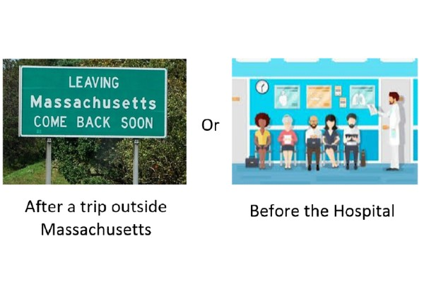
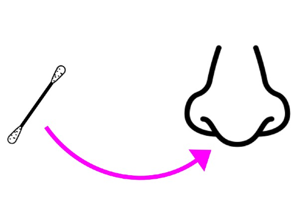
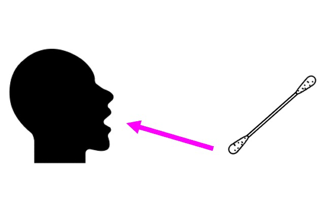

This is a story of how I will get a Coronavirus Test. Remember, even if I’ve worn my facemask, I still might need to get a test!

Getting a Coronavirus test keeps me healthy. Getting a test also helps to keep my family, my friends, and the entire world healthy!
When I’m health, I can do my favorite things! I can play, do my schoolwork, and have fun with my friends!
People can get coronavirus tests for different reasons. If I feel sick, I might need to get a test.
If my family or my friends feel sick, and I’ve seen them recently, I might have to get a test too.

If I went outside the state, I might need a test as well. Sometimes, I need to get a test before
I go to the hospital for a procedure.

The person who will help give me my test will look like this:
The person who will give me my test will be wearing protective equipment like a mask, face shield or gown.
This may look funny or different, but it helps keep them and me safe. It is important that we all make safe choices!
The test could happen in the Doctor’s office, but it might also happen in the car.

When I am in the car, the testing steps are the same. The only difference is that I am in my car and not in the doctor’s office.

To get tested for coronavirus, the nurse may test my nose, or she may test my throat.
To test my nose, the Nurse will take a q-tip and swirl it around the inside of my nose.

This might feel a little funny, but it will be over in just a second.
For the Nurse to test my throat, I will have to open my mouth super wide! The Nurse will go through my mouth and lightly rub the q-tip on my throat.

This might feel a little funny, but it will be over in just a second.
For the test to work, I have to keep my mouth open until the nurse removes the q-tip from my mouth.
By taking my Coronavirus test, I helped to keep myself, my family, and my community healthy.
When I do a good job getting my test done, I will feel very proud of myself!